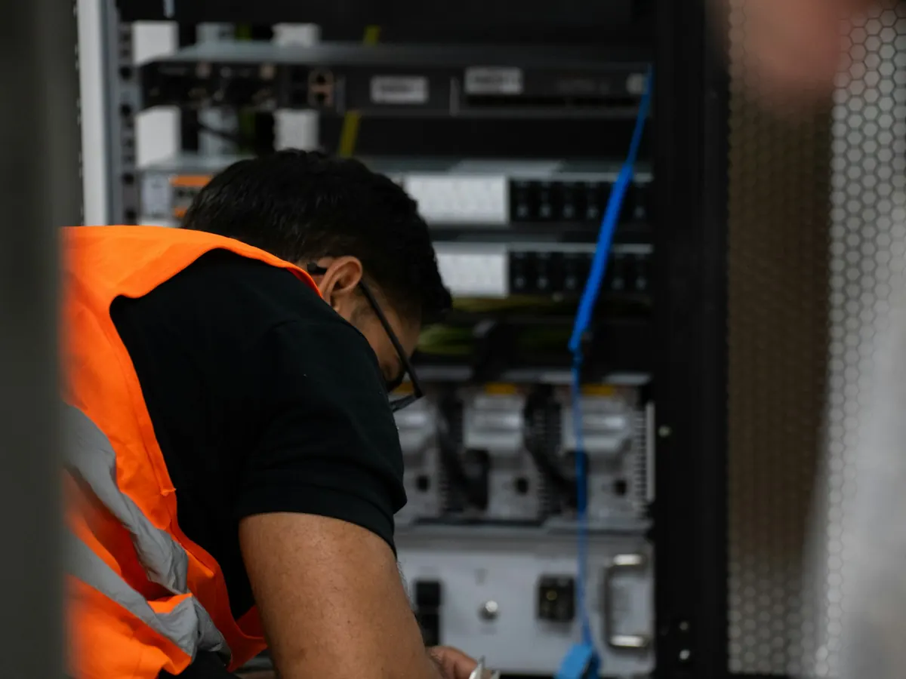
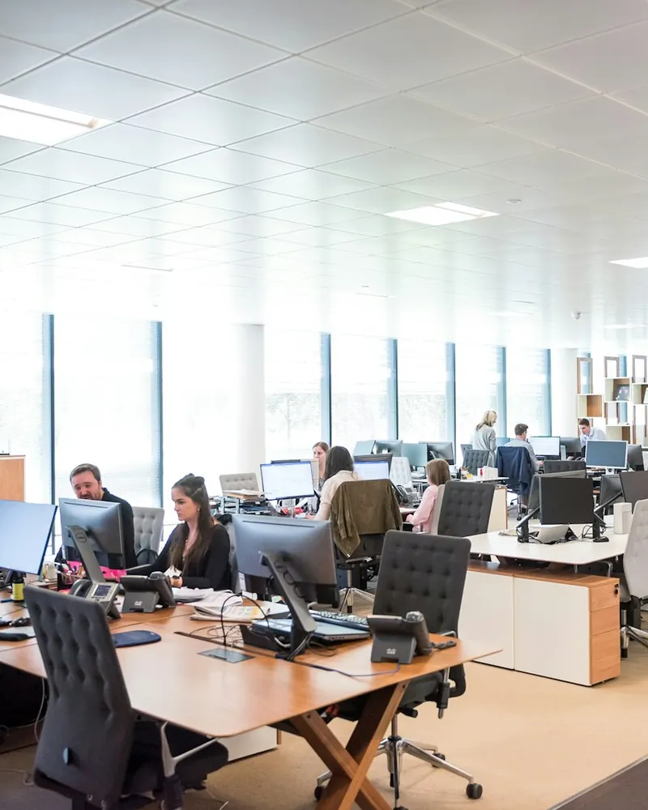

Maintenance informatique pour les entreprises de Nice et du 06
Postes qui ralentissent, imprimante partagée en panne, mises à jour oubliées : la maintenance informatique évite que ces petits soucis deviennent des journées perdues. Nous surveillons votre parc, le tenons à jour et répondons à vos salariés dès qu'ils ont besoin d'aide.

Dépannage ponctuel ou maintenance : quelle différence ?
Le dépannage répare après la panne. La maintenance l'évite, et quand un problème survient malgré tout, vous êtes prioritaire.
Sans contrat de maintenance
- On appelle quand tout est déjà bloqué
- Le technicien découvre votre installation à chaque fois
- Mises à jour et sauvegardes laissées au hasard
- Personne pour répondre aux petites questions des salariés
Avec la maintenance Novazur IT
- Les alertes nous arrivent avant que la panne ne vous bloque
- Un interlocuteur qui connaît votre parc et vos logiciels
- Postes à jour, sauvegardes vérifiées, antivirus suivi
- Un helpdesk joignable par vos équipes au quotidien
Ce que comprend la maintenance
Un service informatique complet, sans avoir à recruter.
Supervision du parc
Postes, serveurs et équipements réseau surveillés en continu : disque qui se remplit, sauvegarde en échec, matériel qui fatigue.
Mises à jour de sécurité
Windows, macOS, logiciels et micrologiciels mis à jour régulièrement, en dehors de vos heures de travail.
Helpdesk pour vos salariés
Par téléphone, e-mail ou ticket : nous prenons la main à distance et réglons leurs problèmes au quotidien.
Interventions sur site
Quand il faut se déplacer, nous venons dans vos locaux à Nice, Cannes, Antibes, Sophia Antipolis et dans tout le 06.
Inventaire et documentation
Matériel, licences, garanties et accès consignés : vous savez ce que vous avez, et rien ne dépend d'une seule personne.
Arrivées et départs
Préparation du poste et des comptes d'un nouveau salarié, fermeture des accès au départ d'un autre.
- < 4hpour intervenir sur site
- 5 minpour une prise en main à distance
- 6j/7support joignable
Comment démarrer
Quatre étapes, sans interrompre votre activité.

Audit de votre parc
Postes, serveurs, réseau, sauvegardes, sécurité : nous faisons l'état des lieux dans vos locaux.
Proposition sur mesure
Un contrat adapté à votre nombre de postes et à votre activité, détaillé par écrit.
Mise à niveau et installation
Correction des points faibles repérés et installation de nos outils de supervision.
Suivi continu
Maintenance au quotidien et point régulier avec vous sur l'état de votre informatique.
Maintenance informatique : vos questions
À partir de combien de postes un contrat de maintenance est-il utile ?
Dès le premier poste, si votre activité dépend de votre ordinateur. Nous accompagnons aussi bien un cabinet d'une personne qu'une PME d'une cinquantaine de postes : le contrat s'adapte à la taille de votre parc.
Que couvre exactement le contrat ?
La supervision des postes et serveurs, les mises à jour de sécurité, le helpdesk pour vos salariés, l'antivirus managé et les interventions sur site selon le niveau choisi. Tout est détaillé par écrit avant la signature.
Quels sont vos délais d'intervention ?
Nos contrats précisent un délai de prise en charge selon la gravité de l'incident. Les problèmes bloquants sont traités en priorité, le plus souvent à distance en quelques minutes.
Pouvez-vous reprendre un parc géré par un autre prestataire ?
Oui. Nous réalisons un audit, récupérons les accès et la documentation, puis assurons la transition sans interruption de service.
Intervenez-vous aussi sur les Mac et les imprimantes ?
Oui : PC Windows, Mac, serveurs, imprimantes et copieurs en réseau, Wi-Fi, box et équipements réseau. Nous prenons en charge l'ensemble de votre parc.
Nos autres services aux entreprises
Retrouvez l'ensemble de notre offre sur la page infogérance et maintenance pour les PME.
- Téléphonie VoIP
- Microsoft 365 et messagerie
- Sauvegarde
- Cybersécurité
- Antivirus managé
- Formations en entreprise
Nous intervenons dans vos locaux, de Fréjus à Monaco

Faites le point sur votre parc informatique
Audit sans engagement dans vos locaux, partout dans les Alpes-Maritimes.